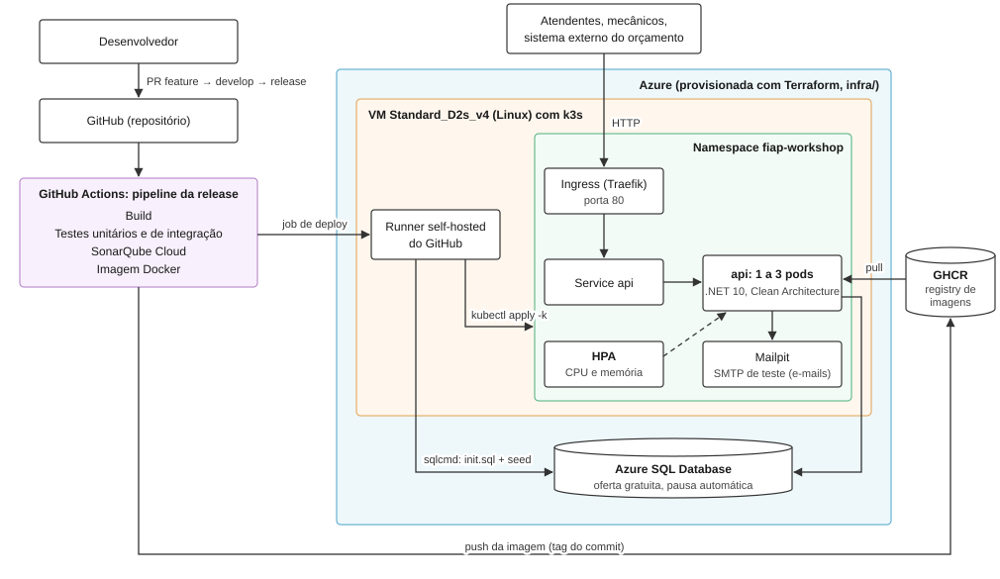

Tech Challenge — Fase 2 · Pós-graduação FIAP em Arquitetura de Software (SOAT)
| Nome | Username Discord |
|---|---|
| Humberto Vitalino | hbrto. |
Repositório público, o mesmo da Fase 1. Conforme orientação dos professores, a visibilidade pública dispensa o convite ao usuário soat-architecture.
Até 15 minutos: deploy da aplicação, execução do CI/CD, consumo das APIs e escalabilidade automática sob carga.
Com a aplicação no ar, o mesmo documento é servido no Swagger (/swagger), que permite chamar as rotas pelo navegador. Endereços de cada ambiente na seção Documentação da API do README.
A Fase 2 evolui o back-end da Fase 1 (.NET 10, Clean Architecture e DDD) para suportar maior demanda, com infraestrutura escalável, provisionamento e deploy automatizados.
| Requisito | O que foi entregue |
|---|---|
| Refatoração | Dependências entre camadas revisadas; validação de transição de status da OS concentrada numa guarda única; usuário de sistema protegido; JSON malformado responde 400; um único framework de mock. SonarQube Cloud: 97,5% de cobertura em Domain/Application, 0 bugs e 0 vulnerabilidades. |
| Consulta de status da OS | GET /api/v1/service-orders/{id}/status: status atual e data da última mudança. |
| Aprovação de orçamento | Webhook POST /api/v1/webhooks/budget-decisions para o sistema externo informar aprovação ou recusa. Autenticado por API key (X-Api-Key) e idempotente: uma notificação repetida não tem efeito colateral. |
| Listagem de OS | Em execução > Aguardando aprovação > Em diagnóstico > Recebida, mais antigas primeiro. Finalizadas e entregues ficam fora da listagem, sem exclusão física. |
| Atualização de status por e-mail | Evento de domínio a cada mudança de status; o cliente recebe um e-mail (MailKit). Mailpit como servidor SMTP de teste. |
| Abertura de OS | Recebe cliente e veículo já cadastrados e devolve o identificador da OS. Serviços e peças entram no orçamento, depois do diagnóstico, porque o orçamento reserva estoque e só o mecânico sabe o que será usado. Decisão de negócio, registrada no CONTEXT.md. |
| Docker | Dockerfile multi-stage e docker-compose com api, SQL Server, Mailpit e carga do schema e dos dados de demonstração. |
Kubernetes (/k8s) |
Deployment e Service da api e do Mailpit, Ingress, ConfigMap, Secret, probes de saúde e HPA de 1 a 3 réplicas por CPU e memória. Kustomize com overlays para o cluster local (k3d) e para a Azure. |
Terraform (/infra) |
Rede, firewall, IP público, VM com k3s instalado no primeiro boot, Azure SQL Database e os segredos da aplicação (senha do banco, chave do JWT e chave do webhook). |
| CI/CD (GitHub Actions) | A cada merge na release: build, testes unitários e de integração, SonarQube Cloud, imagem Docker no GHCR, deploy do banco (sqlcmd), aplicação dos manifestos (kubectl apply -k) e smoke test. CodeQL (SAST) em todo merge e semanalmente. |

Componentes da aplicação (namespace fiap-workshop), infraestrutura provisionada pelo Terraform (caixa da Azure) e fluxo de deploy (do PR até o runner na VM). O mesmo desenho está no README, na seção "Arquitetura de implantação".
| Recurso | Por que |
|---|---|
VM Azure Standard_D2s_v4 (2 vCPU, 8 GB, Ubuntu 24.04) com k3s |
Kubernetes leve que já inclui o Ingress (Traefik) e o metrics-server usado pelo HPA. O AKS foi descartado porque os nós pagos e o load balancer padrão consumiriam o crédito de estudante sem ganho para a solução. A série B, mais barata, não está disponível no Brasil na assinatura de estudante. |
| Azure SQL Database (oferta gratuita) | O mesmo motor SQL Server usado desde a Fase 1, sem migração. Fica fora do cluster e pausa sozinho quando ocioso. As probes periódicas não consultam o banco, para não esgotar a cota mensal. |
| GitHub Actions + runner self-hosted na VM | O deploy roda dentro da própria VM: a API do Kubernetes não fica exposta na internet e nenhuma credencial da Azure fica guardada no GitHub. |
| GHCR (GitHub Container Registry) | Registry integrado ao repositório; cada imagem leva a tag do commit, que é a mesma aplicada no cluster. |
Terraform (providers azurerm e azapi) |
O azapi cria o banco porque o azurerm não expõe a oferta gratuita do Azure SQL. O provisionamento roda fora do pipeline: a infraestrutura é criada uma vez, e o deploy da aplicação acontece a cada merge. |
| Mailpit | Servidor SMTP de teste que captura os e-mails de mudança de status. A configuração de e-mail fica em ConfigMap e Secret, pronta para um provedor real. |